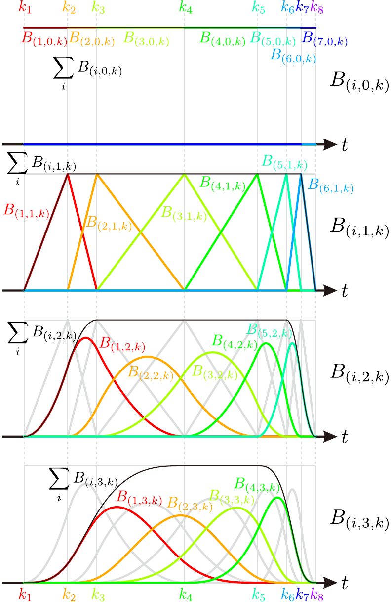

BasicBSpline.jl
Summary
This package provides basic (mathematical) operations for B-spline.
The package Interpolations.jl says:
Currently this package's support is best for B-splines and also supports irregular grids. However, the API has been designed with intent to support more options. Pull-requests are more than welcome! It should be noted that the API may continue to evolve over time.
As mentioned before, this package treats mathematical aspect of B-spline, so the difference between these packages is a main purpose.
- If you are interested in Interpolations, Interpolations.jl would be helpful.
- If you would like to deal with raw B-spline functions, this package would be the best for you. For example:
- B-spline curve
- B-spline surface
- NURBS (Non-Uniform Rational B-Spline)
- IGA (Isogeometric Analysis)
Installation
add https://github.com/hyrodium/BasicBSpline.jlExample Images
Example of B-spline function
Note that this package do not support image export. 